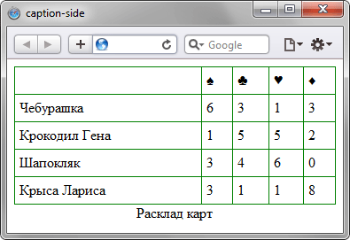

caption-side
Определяет положение заголовка таблицы, который задается с помощью элемента <caption>, относительно самой таблицы. Свойство caption-side выводит заголовок до или после таблицы, а выравнивание текста по правому или левому краю устанавливается через свойство text-align.
Краткая информация
| Значение по умолчанию | top |
|---|---|
| Наследуется | Да |
| Применяется | К <caption> или ко всем элементам, у которых значение display установлено как table-caption. |
Синтаксис
caption-side: top | bottomЗначения
- top
- Располагает заголовок по верхнему краю таблицы.
- bottom
- Заголовок располагается под таблицей.
- left
- Заголовок размещается слева от таблицы. Значение удалено из спецификации и уже нестандартное. Поддерживается только в Firefox.
- right
- Заголовок размещается справа от таблицы. Значение удалено из спецификации и уже нестандартное. Поддерживается только в Firefox.
Пример
<!DOCTYPE htm>
<html>
<head>
<meta charset="utf-8">
<title>caption-side</title>
<style>
table {
width: 100%; /* Ширина таблицы */
border-collapse: collapse; /* Убираем двойную рамку между ячеек */
}
td {
border: 1px solid green; /* Параметры границы */
padding: 5px; /* Поля в ячейках */
}
caption {
caption-side: bottom; /* Заголовок под таблицей */
}
</style>
</head>
<body>
<table>
<caption>Расклад карт</caption>
<tr>
<td> </td><td>♠</td><td>♣</td><td>♥</td>
<td>♦</td>
</tr>
<tr>
<td>Чебурашка</td><td>6</td><td>3</td><td>1</td><td>3</td>
</tr>
<tr>
<td>Крокодил Гена</td><td>1</td><td>5</td><td>5</td><td>2</td>
</tr>
<tr>
<td>Шапокляк</td><td>3</td><td>4</td><td>6</td><td>0</td>
</tr>
<tr>
<td>Крыса Лариса</td><td>3</td><td>1</td><td>1</td><td>8</td>
</tr>
</table>
</body>
</html> Результат данного примера показан на рис. 1.

Рис. 1. Результат использования caption-side
Объектная модель
Объект.style.captionSide
Спецификация
| Спецификация | Статус |
|---|---|
| CSS Logical Properties Level 1 | Редакторский черновик |
| CSS Level 2 (Revision 1) | Рекомендация |
Браузеры
| Internet Explorer | Chrome | Opera | Safari | Firefox |
| 8 | 1 | 4 | 1 | 1 |
| Android | Firefox Mobile | Opera Mobile | Safari Mobile |
| 1 | 1 | 6 | 1 |